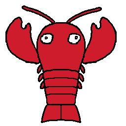

Intro
What is LobsterFramework
As its name suggests, this is a gameplay framework built on top of Unity game engine. It comes with various gameplay systems with some prebuilt utilities and structs:
- Ability System
- Weapon System
- Sample Abilities
- Interaction
- Inventory & Collectable Item
- Lockable/Unlockable Door
- AI
- Statemachine & AI States
- Pathfinding
- Character
- Poise
- Health / Posture / Damage
- Movement Controller
- Character State & Animation Management
- Status Effect
- Sample Effects (Stun, Silence)
- Dialogue System
- Dialogue response
- Dialogue events
Most gameplay systems features editor support, allows developers to fast prototyping their games by modifying gameplay parameters in real time as well as the ability to save the configuration to the disk. Additionally, safe guard and debug messages are implemented to inform developers of the misconfiguration & errors of the systems.
This framework is developed in conjunction with my 2D Top-Down Action game project. The sample code that make use of theses abilities are heavily geared towards that game. In fact, the idea of having a reusable framework for future unity project only started emerging a couple months into the development. Since then, the codebase of that game is separated into 2 assemblies. One of them, as you might guess, is the LobsterFramework, and the other one is simply called GameScripts that makes use of the constructs and utilities of the LobsterFramework.
I'm well aware that there're still lots of room for improvement and I intend to slowly perfect them over the years as I'm planning on making it the foundation of most of my future projects in Unity. The design goal is to make it as organized, flexible, reusable and convenient as possible without sacrificing too much performance.
Dependencies
The following plugins are required:
- AStarPathFindingProject
- Animancer
There exists free versions of these plugins and are fully functional in the editor.
For Animancer, the ability system and character state managing components makes use of the ability to modify animation speed which is only supported in build by pro version. Animancer was introduced to solve the problem of blending transitions between animations. Unity's native solution Animator.CrossFade() breaks when called consecutively during transitioning into another animation, which causes animations to freeze and look very janky. Animancer also allows to play animation direction from animation clip references which enables cleaner code patterns and gets rid of hard coded asset names.
For AStarPathFindingProject, it is safe to use the free version in build. I've discovered that I can implement 3D pathfinding using Unity's native pathfinding package. If Unity's pathfinding solution also works well on 2D, it is possible that I'll reimplement the part that handles AI Pathfinding without relying on this 3rd party package. But for now this is not of any high priorities compared to other tasks at hand.
I realize it can get really expensive for people to get onboard as I keep adding more depencies to other 3rd party paid assets. For that reason I'll also try to implement the needed features myself in place of these assets when my hand's cleared to reduce the amount of dependencies. Additionally, for complex and mature systems that relies on these, I'll try to modularize and separate them out from the rest of the framework.
Purpose of this documentation
The main purpose of this documentation is to make a record of the details and insights I settled down when I built the systems. This makes it easier for me to make modifications & improvements without causing havoc to other parts of the codebase. Secondly, whoever's working with my codebase (most likely my future coworkers) should be able to find this useful and be empowered to make their own modifications.
